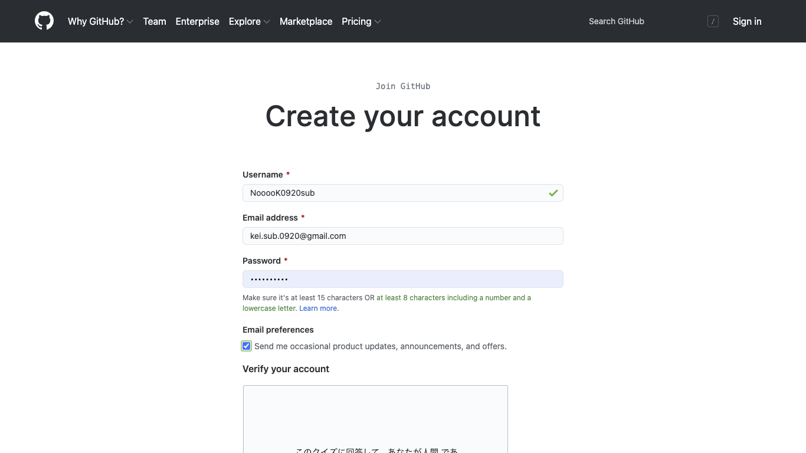
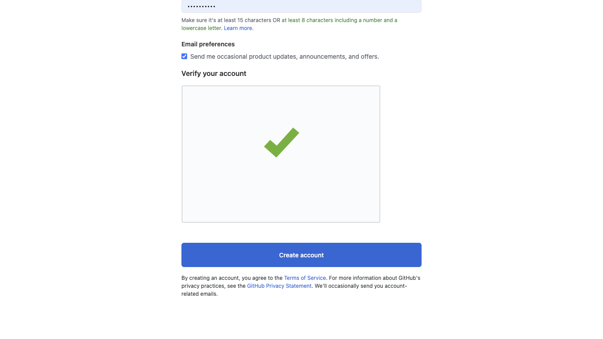
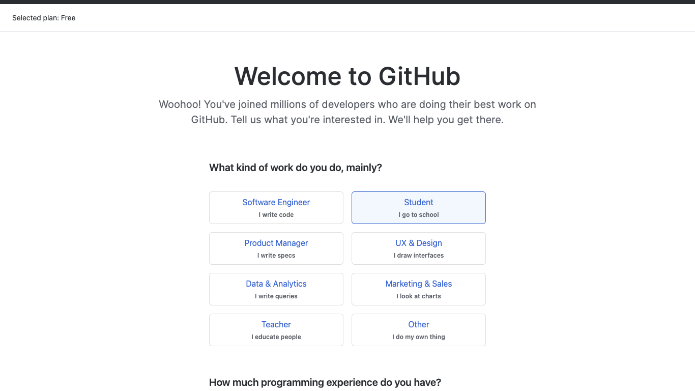
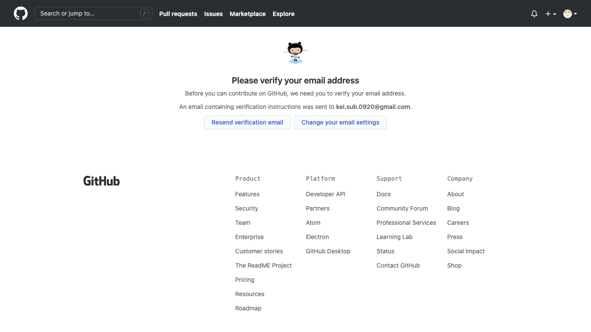
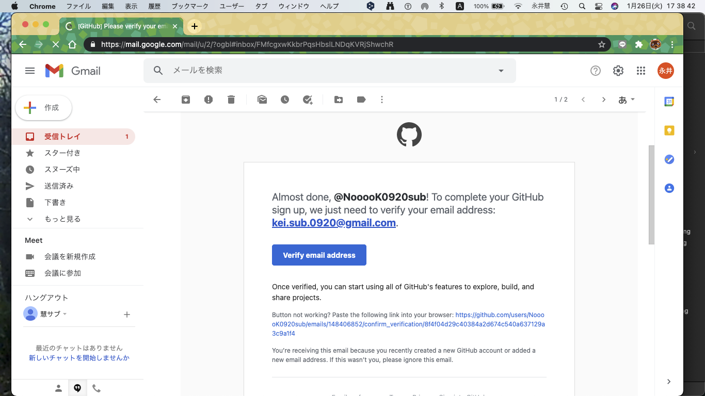
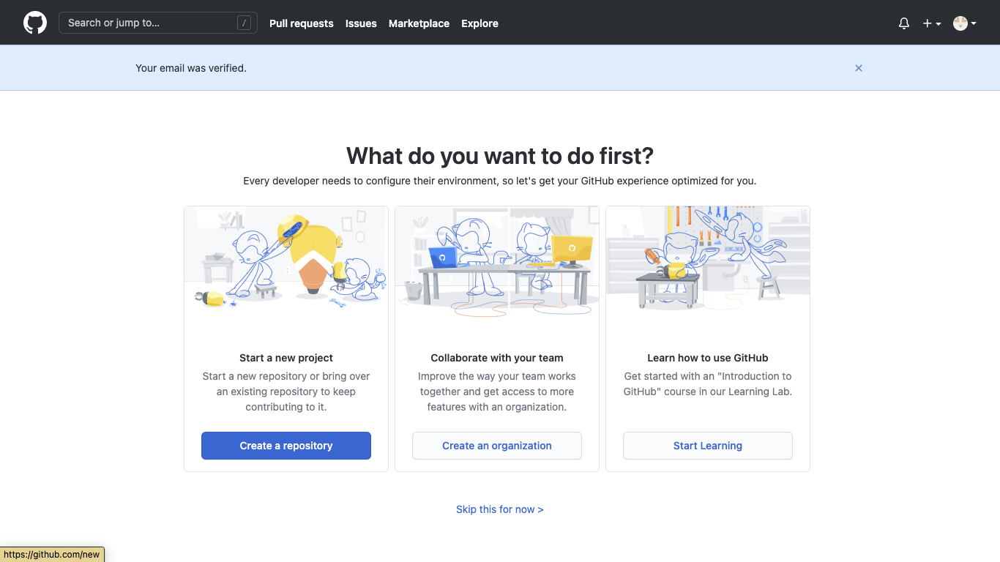
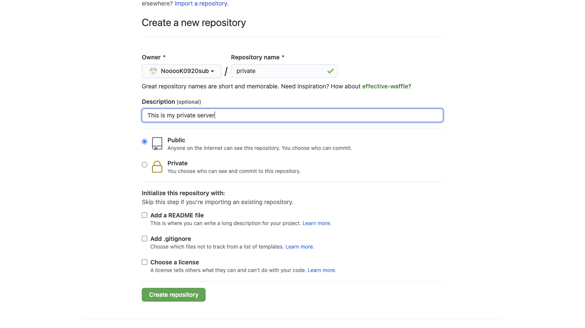
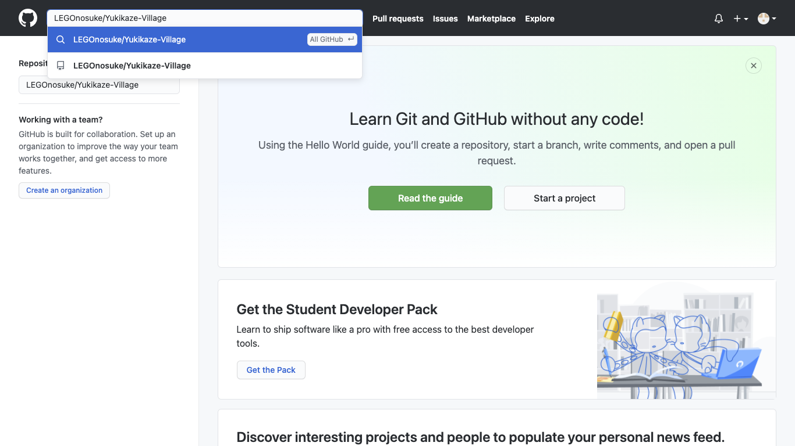
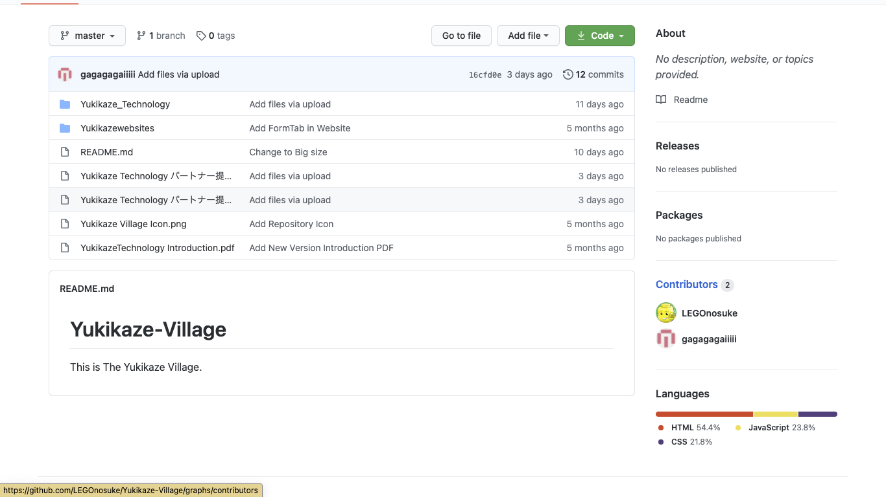

<!DOCTYPE html>
<html lang="jp" dir="ltr">
  <head>
    <meta charset="utf-8">
    <link rel="stylesheet" href="../master.css">
    <title>Githubの作り方と入り方</title>
  </head>
  <body>
    <a href="../index.html">戻る</a>
    <p>まずは<a href="https://github.com/" target="_blank">https://github.com/</a>にアクセスします</p>
    
    <p>するとこんな画面が現れると思います。（2021/1/27現在）</p>
    
    <p>自分のメールアドレスを入力します</p>
    
    <p>ユーザーネームを決めます（結構既に使われてることが多かった印象）<br>パスワードも決めます<br>チェックを入れます</p>
    
    <p>もしあなたが機械でなければ機械でないことを証明します。</p>
    
    <p>その後いくつかの質問に答えて（適当でもいいはず）続けます</p>
    
    <p>メールアドレスチェックをします。自分のメール受信箱にアクセスし、リンクをクリックし、承認します。</p>
    
    <p>届いてなければメールアドレスが間違っていると思います</p>
    
    <p>別にやんなくてもいいですが、自分のレポジトリを作成します。レポジトリとは自分の倉庫とでも考えておきましょう。<br>今までのが家で、これから倉庫を建てます。別に作らなくてもいい人はスキップしてくだしあ</p>
    
    <p>Repository nameは自分の倉庫の名前とでも考えておきましょう。共有するときはそれがURLになります。<br>Descriptionは説明という意味です。自分のレポジトリ（倉庫）の説明を書きましょう（任意）<br>誰かにURLでデータを共有したいときはPublicを選択します</p>
    
    <p>作ったら左上の入力欄に”LEGOnosuke/Yukikaze-Village”と入力して、検索し、選びます。</p>
    
    <p>共有したいデータが見えます。</p>
    <p>最後に、自分のユーザーネームをDiscordにのDMで送ってください。</p>
    <a href="../index.html">戻る</a>
  </body>
</html>
